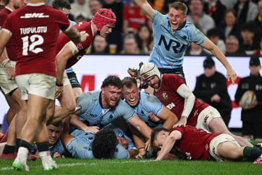
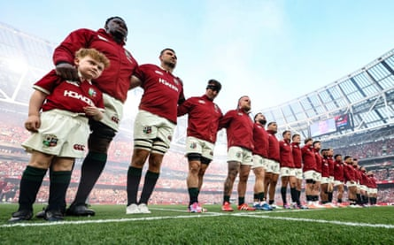

For some reason Dame Edna Everage sprang to mind in the wake of the British & Irish Lions’ less-than-marvellous display against the NSW Waratahs on Saturday. As Edna once waspishly told a fellow grand dame: “I’m trying to find a word to describe your outfit … affordable.” It was not dissimilar to the lacklustre Lions in Sydney: all dressed up and nowhere to hide.
It has been an awkward few days all round, with increasing amounts of potential comedic ammunition available to Aussie hecklers. “Mr Farrell, welcome to our hotel, we’ve held the family suite for you.” “Mate, was the pitch really damp on Saturday or were you blokes just wallowing in your own mediocrity?” It is reaching the point where the Lions need to start delivering a few short sharp punchlines of their own.
“Maybe we should play Fiji instead?” was briefly a possibility as the Wallabies hovered on the brink of losing their warm-up Test in Newcastle. But it is a dangerous game to play when, self-evidently, there continues to be a risk of the Lions rocking up underdone to Brisbane for the first Test on Saturday week. Australia may not be the best team in the world – they went into the weekend ranked eighth – but where does that leave the Lions if the series heads south?
Among other things, it makes the first Test absolutely pivotal. This is not a hard and fast law – as recently as their last tour in 2021 the Lions won the opening Test in South Africa only to go on and lose the series – but we should expect Joe Schmidt’s Australia to grow stronger over the course of the three Tests.
Hence the importance of picking the smartest-possible starting XV – and a complementary bench – for that challenge. In some ways Saturday’s scratchy 21-10 win over the Waratahs has simplified the equation. Let’s just say it was not the worst game to miss. There are occasions when players’ reputations are enhanced simply by sitting in the stands and the Waratahs game was one of them.
The Waratahs celebrates Ethan Dobbins’ try.Photograph: Dean Lewins/AAP
So the moment has come for Andy Farrell to cease his ruminative beard-stroking, replace the light pencil with proper ink and get down to it, dah-ling. There is still the Brumbies game this Wednesday to assist deliberations further but the time for experimentation has all but expired.
The front row, in theory, should be straightforward. The Lions may have waxed and waned to date but their scrums have gone pretty well. Dan Sheehan is first among equals at hooker and Ellis Genge and Andrew Porter, probably in that order, are both tough hombres at loosehead. But the picture at tighthead is murkier: do the Lions go with the proven farmer strength of Tadhg Furlong, the maturing Will Stuart or the previously little considered Finlay Bealham?
If Furlong is back anywhere close to his best, Farrell will be tempted. But at this point a wider Irish question presents itself. The Lions could possibly select as many as 10 or even 11 players from the Ireland side who finished the Six Nations with a laboured 22-17 win over Italy. No disrespect to the Azzurri but there is rather less snap and crackle about some of Ireland’s leading lights than a year ago.
That could mean the usual assumptions about the benefits of cohesion do not hold as much water. And if Maro Itoje and Joe McCarthy are bolted on to start in the second row it also raises other related back-row questions. On tour form alone Ollie Chessum might just be edging in front of Tadhg Beirne, and Jac Morgan a gnat’s nostril ahead of Josh van der Flier.
Of course it matters not, in theory, where a qualified Lion hails from. But assuming Jack Conan starts at No 8, is there realistically enough time left to develop the kind of ingrained understanding the all-Irish trio possess? Possibly not, a scenario that will be niggling away in the back of Farrell’s mind.
At least nobody disputes Jamison Gibson-Park will start at 9 and Finn Russell at 10; all things being equal, the back three should comprise James Lowe, Blair Kinghorn and Tommy Freeman. Which leaves the midfield and the bench. Do the Lions go for a they‑shall-not‑pass central defensive brick wall of Bundee Aki and Gary Ringrose or reunite Russell with Sione Tuipulotu and Huw Jones?
Captain Maro Itoje pledged ‘passion and energy and the zeal you would expect of a Lions squad’ back in May.Photograph: Billy Stickland/Inpho/Shutterstock
It would seem even Farrell remains undecided. At the weekend he acknowledged that Test matches tend to be tighter tactical affairs than the lead-up games. “We are good when we are direct,” he murmured. But the Lions could do with some extra pace – hence the likelihood of Henry Pollock being among the replacements – and Jones offers that. Farrell will further have noted the way in which Fiji ran at the Wallabies and kept their potentially influential centres quiet as a result.
The Lions should also keep in mind their captain’s pledge at the squad announcement back in May. “I want us to play with passion and energy and the zeal you would expect of a Lions squad,” said Itoje back then. The cameras in the visiting dressing room at the weekend did not catch a tremendous amount of that and one or two individuals look to have plenty on their youthful minds.
So stick or twist? Strip back the gameplan or keep the faith? Put Farrell Jr on the Test bench ahead of Fin Smith for pure psychological effect? It says everything about the concertina-ed nature of this Lions trip that such debates remain live at this late stage. But ultimately the answer is simple: go all out or go home. As the great Dame Edna might have put it: “Don’t chicken out now, possums!”